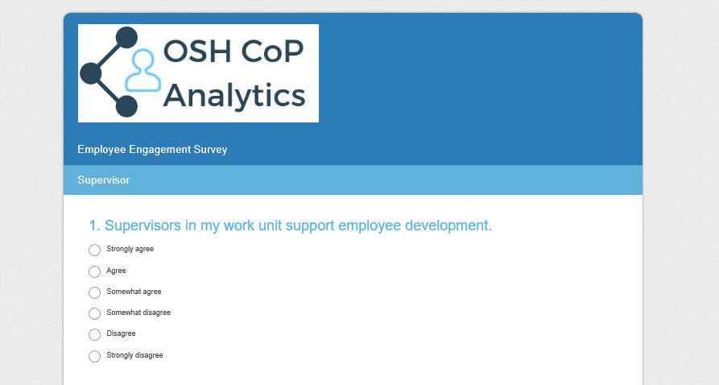

Creating Value
How can this project bring additional value to the firm?
Inspired by the Office of Personnel Management's survey of all federal agencies, we have created a Booz Allen employee engagement predictive analytics tool to pre-determine an organization's safety and health risk.
The Employee engagement survey has 20 questions, divided into four categories: Supervisors, Intrinsic Work Experience, Leaders Lead, and Satisfaction.
Each question is ranked 0-5; 0 = strongly disagree, 1 = disagree, 2 = somewhat disagree, 3 = somewhat agree, 4 = agree, 5 = strongly agree.
Responses are totaled and averaged for each category and multiplied by 20 to create a score out of 100 -- 100 would be a perfect engagement score. Once the engagement score has been calculated, it will be entered into the OSH CoP's new LTCR predictive model.